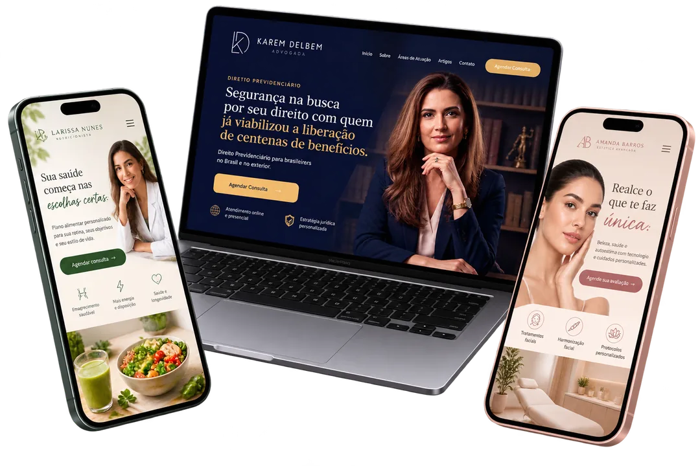
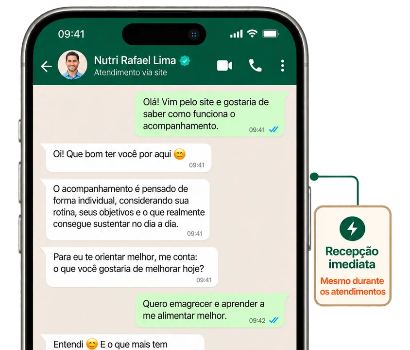

A oportunidade chega
Redes sociais, anúncios ou indicações trazem novas pessoas até o seu site.
A Grid estrutura sua jornada comercial para que seu site integrado à Funcionários Digitais I.A no Whatsapp recebam, orientem e conduzam novas oportunidades enquanto você se dedica ao que faz de melhor.
Sua equipe pode estar fazendo um ótimo trabalho e ainda assim perder oportunidades pelo caminho.
Quando atendimento, respostas, dúvidas e próximos passos dependem 100% de alguém estar disponível naquele momento, o crescimento começa a disputar espaço com sustentar a operação.
Sua equipe está resolvendo solicitações, acompanhando demandas e mantendo a experiência de quem já comprou.
Alguém clica na bio do Instagram, visita o site e chama no WhatsApp pedindo mais informações.
Não por falta de interesse, mas porque naquele momento ninguém consegue parar para conduzir aquela conversa.
O contato perde o timing, procura outra empresa ou simplesmente deixa de avançar.
Segundo o MIT Lead Response Management Study, quando o primeiro contato acontece em até 5 minutos, as chances de uma nova oportunidade avançar são muito maiores.
Fonte: MIT Lead Response Management Study
mais chance de a oportunidade avançar quando o primeiro contato acontece em até 5 minutos
A Grid constrói a estrutura para apresentar a sua solução de forma estratégica e para que novos contatos sejam recebidos, orientados e conduzidos desde o primeiro contato. Sites, formulários e Whatsapp deixam de funcionar como pontos isolados e passam a fazer parte de uma estrutura preparada para levar a pessoa ao próximo passo.
Redes sociais, anúncios ou indicações trazem novas pessoas até o seu site.
O site ou landing page criado pela Grid apresenta suas soluções de forma estratégica, organizada e alinhada à identidade da sua marca.
A pessoa entra em contato via Whatsapp e recebe uma resposta imediata, sem depender da sua disponibilidade.
Os funcionários Digitais I.A criados pela Grid e treinados com as informações da empresa atendem o contato, entendem o contexto e conduzem a conversa para o próximo passo de forma natural e objetiva.
A conversa chega mais organizada, contextualizada e você pode atuar com mais objetividade, focando em construir conexões reais com quem está no momento certo.
O site apresenta sua proposta, organiza as informações e ajuda o visitante a entender por que vale a pena avançar.
Quando esse interesse se transforma em contato, os Funcionários Digitais entram no WhatsApp e no Instagram para receber, orientar, qualificar e conduzir cada oportunidade até o próximo passo.
Tudo é estruturado como uma única jornada, da primeira visita ao momento em que sua equipe precisa entrar.

Preparam o visitante para avançar
A Grid cria o site para apresentar sua proposta com clareza, responder dúvidas importantes e conduzir o visitante até uma ação.
O site cumpre o papel de

Recebem e conduzem as oportunidades
No WhatsApp e no Instagram, os Funcionários Digitais dão continuidade ao interesse gerado pelo site.
Eles podem:
O Site prepara a decisão. Os Funcionários Digitais transformam esse interesse em um próximo passo.
Parte do nosso trabalho é entender como seu comercial funciona hoje, transformar o que está na sua cabeça em uma estrutura clara e cuidar da implementação com você.
Você entra com o conhecimento sobre seu negócio. A Grid conduz o processo de transformar esse conhecimento em jornada, páginas, mensagens e Funcionários Digitais.
Explore as 6 etapas do projeto
Mapeamos oferta, público, canais, atendimento atual, responsabilidades e pontos de maior dependência.
Definimos etapas, decisões, passagens para o humano e o papel de cada ponto de contato.
Estruturamos páginas, mensagens, perguntas, critérios, tom e direcionamentos da experiência.
Implementamos agentes, canais e integrações necessárias, respeitando limites e responsabilidades.
Validamos fluxos, respostas, exceções, encaminhamentos e situações que exigem atendimento humano.
Colocamos a estrutura em uso, observamos as conversas e refinamos o que precisa melhorar.
Sem dividir sua atenção entre a cliente atual e uma sequência de novas mensagens.
Oportunidades recebem orientação mesmo quando você está ocupada ou fora do horário.
O padrão de atendimento deixa de depender da memória, da correria ou do improviso.
Você reduz a sensação de estar sempre deixando oportunidades para trás.
O comercial continua se movimentando mesmo quando sua atenção está em outro lugar.
Sem transformar cada novo contato em mais uma tarefa pessoal.
Alguns clientes que já confiaram na Grid
A Grid foi fundada por uma profissional formada em Ciência da Computação, com especializações em Marketing Digital e Psicologia.
Essa combinação orienta a forma como os projetos são construídos: não apenas pensando no que a tecnologia consegue fazer, mas também em como as pessoas percebem uma oferta, tomam decisões e avançam ao longo de uma experiência digital.
Na prática, isso significa olhar para três dimensões ao mesmo tempo:
Integrações, estrutura, automações e os recursos necessários para sustentar a jornada.
Posicionamento, proposta, oferta e caminho de conversão.
Clareza, percepção de valor, redução de incerteza e próximos passos compreensíveis.
A Grid entende que a tecnologia sozinha é suficiente. Para que a jornada funcione, precisa se conectar com pessoas, entender seus comportamentos e apresentar um caminho claro.
Algumas pessoas já entenderam como você trabalha. Outras tiveram dúvidas respondidas. Algumas perceberam que sua solução não era para elas. E as que fazem sentido já avançaram.
Você continua sendo importante para o comercial. Só deixa de precisar estar presente em cada minuto dele.Esse não é o objetivo. A jornada parte da experiência que você quer proporcionar. A tecnologia assume funções específicas e você permanece nos momentos em que sua experiência realmente é necessária.
Não necessariamente. Ele pode assumir tarefas específicas, complementar uma equipe existente ou dar consistência a etapas que hoje dependem de esforço manual.
A proposta é justamente evitar um atendimento genérico. O comportamento, as informações e os direcionamentos são definidos a partir do seu negócio, da sua oferta e da experiência que você deseja proporcionar.
A jornada pode identificar esse momento e encaminhar a oportunidade para você ou sua equipe. Automação não significa impedir contato humano; significa utilizar contato humano onde ele agrega mais valor.
Não. Nosso papel é cuidar da estrutura e da tecnologia. O seu é nos ajudar a entender profundamente seu negócio, sua oferta e a experiência que deseja proporcionar.
Na conversa, vamos entender como as oportunidades chegam hoje, onde sua jornada depende excessivamente de você e se faz sentido estruturar esse processo com a Grid.
Sem compromisso de contratação. Primeiro, entendemos seu cenário e avaliamos se a Grid faz sentido para o momento da sua empresa.